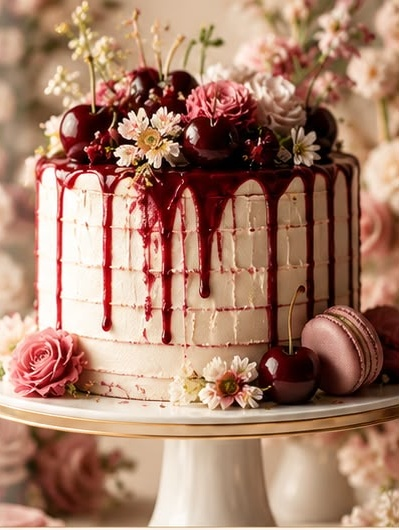
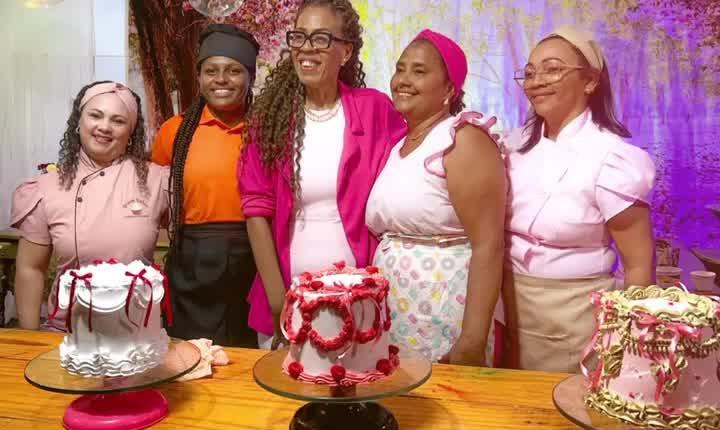
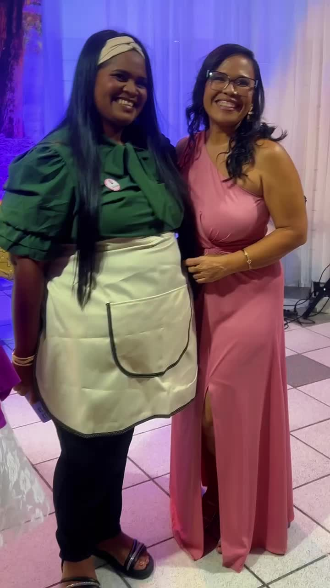
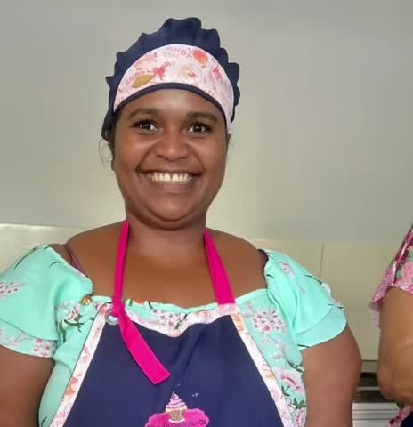
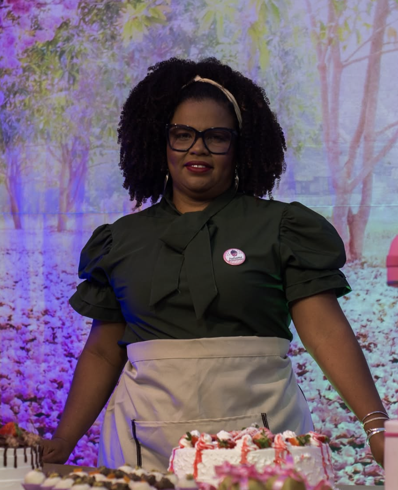
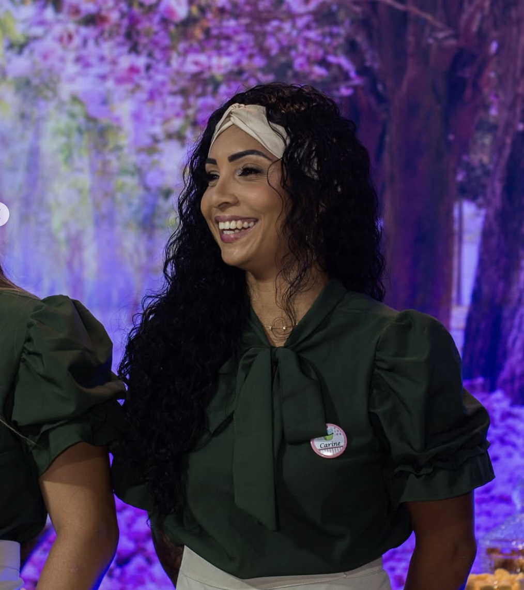

Fundamentos da confeitaria
Massas, recheios, montagem, finalização, bolos caseiros, bolo vulcão e tortas doces.
 Quero apoiar
Quero apoiar
O Ane Cakes Fair transforma a confeitaria em uma ponte para qualificação profissional, empregabilidade, empreendedorismo feminino e autonomia financeira.

“Eu vou chegar lá!”
— depoimento de aluna durante a formaturaO projeto combina formação técnica, prática, desenvolvimento humano, empreendedorismo e conexão direta com o mercado de trabalho.
Fundamentos da confeitaria, massas, recheios, montagem e finalização.
Doces, salgados, chantilly, acabamento, especialidades e produção real.
As participantes mostram suas competências em um evento público.
Empresas, empresários e parceiros conhecem talentos preparados para trabalhar ou empreender.
Massas, recheios, montagem, finalização, bolos caseiros, bolo vulcão e tortas doces.
Produção, montagem e estruturação de peças.
Técnicas de chantilly, apresentação e decoração — 5 aulas dedicadas.
Pão delícia, bolos típicos e tortas salgadas.
Precificação e noções de custo e formação de preço de venda.

O projeto já construiu uma trajetória de realização, rede de parceiras e conexão com o mercado.

Em 2026, a quinta edição amplia a experiência para aproximar formandas, ex-alunas, empresários, fornecedores, familiares e parceiros em uma plataforma de conexão entre talento e oportunidade.

Talento em prática
Confiança para apresentar
Celebrar conquistas Resultado que pode ser visto
Resultado que pode ser vistoO Ane Cakes Fair busca um ecossistema de parceiros — não apenas patrocinadores isolados. Sua empresa pode entrar onde fizer mais sentido para o seu negócio.
Associe sua marca à realização da feira, com visibilidade, presença institucional e ativações.
Contribua com ingredientes, embalagens, utensílios e materiais profissionais.
Contrate diretamente mulheres já capacitadas e testadas na prática.
Compartilhe conhecimento em gestão, atendimento, técnica ou empreendedorismo.
Apoie com estrutura, comunicação, alimentação, transporte ou outras necessidades operacionais.
Amplie o alcance, a legitimidade e a sustentabilidade da iniciativa.
Maior exposição de marca, destaque em materiais, ativações, conteúdo personalizado e relatório de impacto.
Exposição de marca, presença no evento, divulgação digital e participação institucional.
Inserção de marca, agradecimentos e presença nos materiais de apoio.
Estrutura de referência para a edição com 12 mulheres em formação e evento para aproximadamente 2 mil pessoas.
Converse com a equipe sobre a 5ª edição do Ane Cakes Fair e descubra como sua empresa pode apoiar, contratar, mentorar ou investir no projeto.
Falar com Anne pelo WhatsApp →